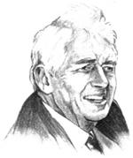
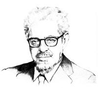
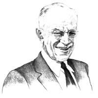
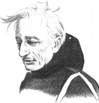
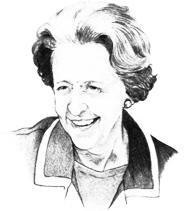
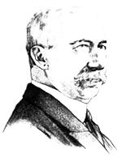
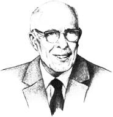
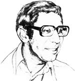

With the selection of these individuals--based on suggestions from MOTHER's readers and voted upon by her editors-we have now chosen 13 people (one for each year THE Mother Earth News" has been published) whom we esteem for the work each has done to further the protection and preservation of the planet . . . and our 1983 honoree will be announced in the next issue.
In addition to their appearance in the pages of this magazine, these true friends of the earth have been honored in commemorative displays at our beautiful Eco- Village. It's a small tribute, indeed, because the good that these men and women have accomplished has
benefited us all . . . and--under the careful guardianship of each one of us--it will serve our descendants for many years to come.
" . . . this generation is not required to race through all the resources it can find . . . this is the only earth, and there is no spare."
DAVID ROSS BROWER
American Conservationist and Activist (1912- )
David Brower has directed the Sierra Club and the John Muir Institute, and has both created and directed the Friends of the Earth Foundation. He has initiated, designed, and edited films, magazine articles, and books . . . led the fight to keep dams out of the Grand Canyon and Dinosaur National Monument . . . played a major role in promoting the Wilderness Act (1964) . . . and is an international lecturer and a principal activist in conservation campaigns. A skilled outdoors man, Brower was the first to climb New Mexico's Ship rock and some 30 peaks in the Sierra Nevada.
" . . . man must take cognizance of the fact that he cannot create as efficiently as he can destroy . . . he should lead and direct, not force and overpower, the natural processes."
JEROME IRVING RODALE
American Editor, Publisher, and Author (1898-1971)
J.I. Rodale had long been an editor and publisher before founding Rodale Press, which has become a center for research and reporting on healthful methods of gardening, cooking, and eating. Through Organic Gardening and Prevention magazines (among others), Rodale brought the pathways of a more wholesome life to the attention of millions of American families.
"We patrol the air and the ether, but we do not keep filth out of creeks and rivers. We stand guard over works of art, but species representing the work of aeons are stolen from under our noses . . ."
ALDO LEOPOLD
American Forester, Ecologist, Philosopher, and Author (1886-1948)
A graduate of the Yale School of Forestry, Aldo Leopold spent the first half of his career with the U.S. Forest Service in New Mexico and Arizona, and-in 1933-became the firs professor of game management at the University of Wisconsin. He helped found the Wilderness Society in 1935 and was also an organizer of The Wildlife Society in 1937. Because of his influence in creating wilderness areas in certain national forests and his concept o the "biotic community", which has helped our nation develop a better sense of responsibility toward nature, Leopold is considered the "ecological conscience" of the first half o: this century. In addition, he was a director of the National Audubon Society and a vice president of the American Forestry Association. He's best known, however, for writing A Sand County Almanac, which was published in 1949.
"The problems of the sea cannot be completely separated from those of the rest of the planet, any more than the blood can be separated from the rest of the body."
JACQUES-YVES COUSTEAU
French Marine Explorer, Author, and Film Producer (1910- )
Jacques Cousteau, a marine explorer for more than 35 years, has invented underwater equipment and coined much of the terminology used in underseas studies. He has also had a vast impact upon the public with such books as The Living Sea (1963), and his films The Silent World and World Without Sun both won awards from the Academy of Motion Picture Arts and Sciences and at the Cannes Film Festival, while The Undersea World of Jacques Cousteau was a television favorite from 1968 to 1976. Today, Cousteau has one of the ten mos t recognized names in the United States, and he has succeeded in bringing greater knowledge and awareness of- ocean studies to millions of people throughout the world.
" . . . so delicate is much of the environment, so precarious are its balances, that human actions and interactions . . . can have vast, potentially catastrophic and even irreversible effects."
BARBARA WARD, BARONESS JACKSON OF LODSWORTH
British Economist, Conservationist, Author, and Educator (1914-1981)
Barbara Ward originated the concept that economic development and conservation are interrelated, and she had a strong international political influence, helping us to understand the needs of developing countries and the interdependence of nations. Not only was she president of the International Institute for Environment and Development, but-at various times-she was also assistant editor for The E conomist magazine and a governor of the British Broadcasting Corporation. Ward became well known to Americans through such works as Faith and Freedom (1954), The Rich Nations and the Poor Nations (1962), Spaceship Earth (1966), The Home of Man (1976), and Progress for a Small Planet (1979). In 1972, she coauthored with Rene Dubos Only One Earth: The Care and Maintenance of a Small Planet, and played a key role in the United Nations Conference on the Human Environment.
"The farmers and peasants who live in close touch with Nature can tell by a glance at the crop whether or not the soil is rich in humus. The habit of the plant then develops something approaching personality; the foliage assumes a characteristic set; the leaves acquire the glow of health; the flowers develop depth of color . . ."
SIR ALBERT HOWARD
British Horticulturist and Author (1873-1947)
Sir Albert Howard was dedicated to discovering the best methods of growing healthful foods, and felt that insect pests and plant diseases were indications of poor farming practices. His organic gardening methods, which centered upon the maintenance of healthy, fertile soil, included a formula for composting . . . the use of mulches and ground covers to conserve moisture, moderate soil temperatures, and keep down weed gro wth . . . and the use of natural pest-control methods to
hold insect populations at manageable levels. His books include An Agricultural Testament (1943) and The Soil and Health (1947). Sir Albert is referred to as the "Father of Compost" and is considered the originator of modern alternative cultivation techniques.
" . . . man can manipulate nature to his best interests only if he first loves her for her own sake."
RENÉ JULES DUBOS
French-American Microbiologist, Ecologist, Philosopher, and Author (1901-1982)
Rene Dubos, a bacteriologist turned philosopher, essayist, and lecturer, did not fear the danger of extinction so much as the degeneration of human life, which he felt could be even more tragic. So Human an Animal (1968), which explores the close relationship between environmental conditions and physical, mental, and spiritual development, won a Pulitzer Prize, and his book A Go d Within (1972) centered on Homo sapiens' personal relationship with nature. In 1972, the United Nations Conference on the Human Environment commissioned him and Barbara Ward to coauthor Only One Earth: The Care and Maintenance of a Small Planet. His final works include Quest (1980), Wooing of Earth (1980), and Celebrations of Life (1981). The Rene Dubos Center for Human Environment was dedicated in New York in 1980.
"The way pesticides are promoted and marketed in the Third World by agribusiness and chemical companies is unconscionable. People die, you know."
ANWAR FAZAL
Malaysian Activist (1942- )
Anwar Fazal is president of the International Organization of Consumers Unions, a nonprofit, noncommercial, public-interest foundation based in The Hague, Netherlands. He's respon sible for initiating a series of global consumer networks that create international awareness of-and fight vigorously against-such multinational corporate abuses as the "dumping" of hazardous wastes, banned pesticides, and highly toxic drugs in Third World countries. In fact, Fazal is probably the most influential figure in the worldwide consumer movement, a "whole earth" coalition of citizens dedicated to helping protect the health of our babies and our bodies, and the conditions of our air,water, and land.
|
 |
 |
 |
|
 |
 |
 |
|
 |
 |
|